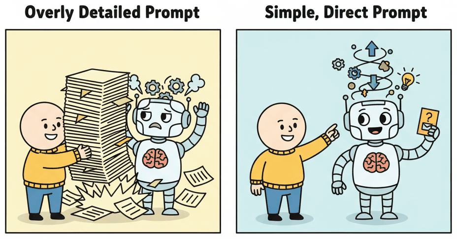
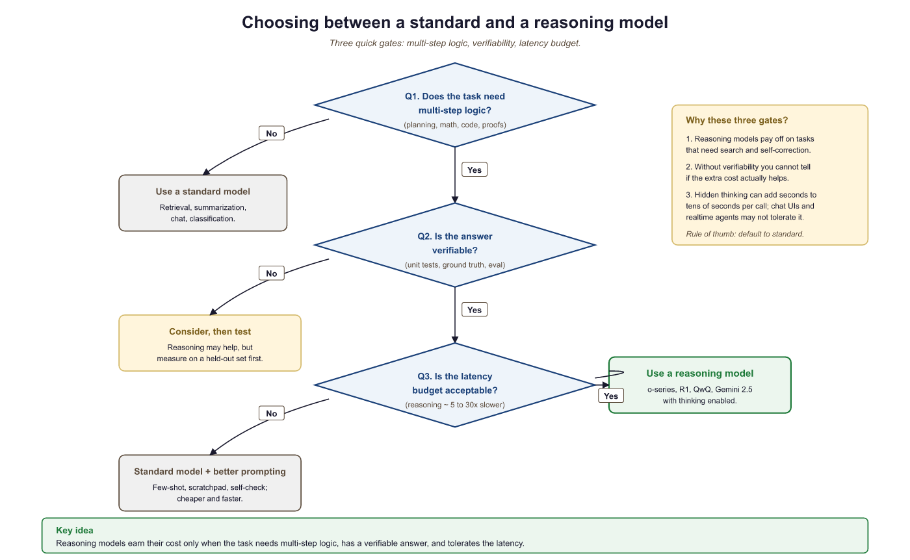

The best prompt for a reasoning model is often no prompt at all. Just ask the question and get out of the way.
Chinchilla, Minimally Prompted AI Agent
Prerequisites
This section assumes familiarity with the reasoning model landscape from Section 8.2 and general prompting techniques from Section 12.1. Knowledge of the LLM API patterns from Section 11.1 is helpful for the code examples.
Reasoning models require different prompting strategies than standard models. Many of the techniques that improve standard LLM performance (chain-of-thought prompting, few-shot examples, explicit reasoning instructions) can actually hurt performance on reasoning models. This happens because reasoning models already perform internal chain-of-thought; adding external CoT prompting can interfere with the model's trained reasoning process. This section provides practical guidance for getting the best results from reasoning models, including decision frameworks, budget control, structured output extraction, and cost management. For the foundational prompting techniques that work with standard models, see Chapter 12. For multimodal prompting patterns (images, documents, video frames), see Section 12.2.

8.4.1 When to Use a Reasoning Model
Self-consistency works because the model's failure modes are high-variance but centered on the correct answer. Wang et al. (2023) showed that for chain-of-thought reasoning, the distribution of sampled answers is bimodal: a high-probability correct mode and a long tail of low-probability wrong modes with no single dominant error. Majority voting therefore approximates the mode of the posterior over reasoning paths, which is asymptotically the correct answer. This breaks down when the model has a systematic bias (a consistent wrong belief), in which case more samples reinforce the error. Knowing the assumption tells you when self-consistency will help (math, logic) and when it will not (factual recall from training data).
The first decision is whether to use a reasoning model at all. Reasoning models are not universally better; they are better on specific task types and worse (or wastefully expensive) on others.
8.4.1.1 Decision Framework

8.4.2 Prompting Differences
The most important practical insight for working with reasoning models is that many standard prompting techniques are counterproductive. Reasoning models have been trained via RL to develop their own internal reasoning strategies. External prompting instructions that attempt to control the reasoning process can interfere with these learned strategies.
Less prompting is more with reasoning models. The chain-of-thought techniques from Section 12.2 were developed because standard models do not think unless prompted to. Reasoning models have internalized this behavior through RL training. Adding "think step by step" to a reasoning model prompt is like telling a professional chess player "remember to look at the board." It is redundant at best and disruptive at worst, because the model may try to follow your reasoning format instead of its own trained strategy. The optimal prompt for a reasoning model is often just the problem statement, clearly and precisely stated.
8.4.2.1 What NOT to Do
| Standard Prompting Technique | Effect on Standard Models | Effect on Reasoning Models |
|---|---|---|
| "Think step by step" | Significant improvement (+10 to 30%) | Neutral or slightly negative (already does this) |
| Few-shot examples with reasoning | Strong improvement | Can degrade performance (constrains reasoning format) |
| "Take a deep breath and work carefully" | Small improvement | No effect (wasted tokens in the prompt) |
| Explicit reasoning format instructions | Helpful for structured output | Can conflict with trained reasoning patterns |
| System prompt with detailed persona | Useful for tone/style | Keep minimal; can dilute reasoning focus |
8.4.2.2 What TO Do
- State the problem clearly and completely. Provide all necessary information up front. Reasoning models perform best when the problem is well-defined and unambiguous.
- Specify the desired output format separately. If you need structured output (JSON, specific format), state the format requirement after the problem, not woven into reasoning instructions.
- Use the reasoning budget parameter. Control thinking depth via the API parameter (reasoning_effort, thinkingBudget) rather than through prompt engineering.
- Provide constraints explicitly. If the answer must satisfy certain constraints (e.g., "answer must be a positive integer"), state them clearly. Reasoning models are good at checking constraints during their thinking phase.
- For complex tasks, break them into subtasks. If a task has multiple independent components, consider making separate API calls for each rather than asking the model to handle everything in one shot. This gives you finer control over reasoning budget per subtask.
A common mistake when migrating from standard models to reasoning models is carrying over elaborate prompting strategies. If your prompt includes phrases like "Let's solve this step by step. First, identify the key variables. Then, set up the equations. Next, solve for x...", you are essentially telling the model how to think. This can prevent the model from using its own (often superior) reasoning strategies. For reasoning models, replace elaborate prompting with a clear problem statement and let the model decide how to approach it.
8.4.3 Budget Control APIs
Each major reasoning model provider exposes parameters that control how much "thinking" the model performs. Effective use of these parameters is essential for managing both cost and latency.
8.4.3.1 OpenAI: reasoning_effort
This snippet configures the reasoning_effort parameter to control how much compute an OpenAI reasoning model uses.
from openai import OpenAI
client = OpenAI()
# Example: Using o4-mini with controlled reasoning effort
def solve_with_reasoning(problem, effort="medium"):
"""
Solve a problem using OpenAI's reasoning model with
explicit effort control.
Args:
problem: The problem statement
effort: "low", "medium", or "high"
low = ~100-500 thinking tokens, fast, cheap
medium = ~500-3000 tokens, balanced (default)
high = ~3000-50000+ tokens, maximum accuracy
"""
response = client.chat.completions.create(
model="o4-mini",
reasoning_effort=effort,
messages=[
{
"role": "user",
"content": problem
}
]
)
# The response includes usage information
usage = response.usage
print(f"Input tokens: {usage.prompt_tokens}")
print(f"Reasoning tokens: {usage.completion_tokens_details.reasoning_tokens}")
print(f"Output tokens: {usage.completion_tokens}")
print(f"Reasoning effort: {effort}")
return response.choices[0].message.content
# Example: Route based on estimated difficulty
def solve_with_routing(problem, difficulty_score):
"""
Route to appropriate effort level based on difficulty.
difficulty_score: 0.0 (trivial) to 1.0 (extremely hard)
"""
if difficulty_score < 0.3:
# Simple problem: use low effort to save cost
return solve_with_reasoning(problem, effort="low")
elif difficulty_score < 0.7:
# Moderate problem: default effort
return solve_with_reasoning(problem, effort="medium")
else:
# Hard problem: maximum thinking
return solve_with_reasoning(problem, effort="high")
# Usage
result = solve_with_reasoning(
"Find all integer solutions to x^3 + y^3 = z^3 where "
"x, y, z are positive integers less than 100.",
effort="high"
)
print(result)
# Expected: The model will reason through Fermat's Last Theorem
# and conclude there are no solutions.8.4.3.2 Anthropic: Extended Thinking
This snippet enables extended thinking in the Anthropic API, giving the model a dedicated token budget for internal reasoning.
# Anthropic extended thinking example (pseudocode)
import anthropic
client = anthropic.Anthropic()
response = client.messages.create(
model="claude-sonnet-4-20250514",
max_tokens=16000,
thinking={
"type": "enabled",
"budget_tokens": 10000 # Max thinking tokens (1024 to 128000)
},
messages=[
{
"role": "user",
"content": "Prove that the sum of the first n odd numbers equals n^2."
}
]
)
# The response contains separate thinking and text blocks
for block in response.content:
if block.type == "thinking":
print(f"Thinking ({len(block.thinking)} chars):")
print(block.thinking[:200] + "...")
elif block.type == "text":
print(f"\nFinal answer:")
print(block.text)8.4.3.3 Google Gemini: thinkingBudget
Gemini 2.5 exposes a thinkingBudget parameter (0 to 24,576) in the generation configuration. Setting it to 0 disables thinking entirely. The model adapts its thinking length within the budget, using fewer tokens for easier problems and more for harder ones.
Controlling reasoning depth is one challenge; getting the output into a usable format is another. Reasoning models generate free-form thinking traces that do not naturally conform to structured schemas, which creates a practical obstacle for production systems that need machine-readable responses.
8.4.4 Structured Output from Reasoning Models
A common challenge with reasoning models is extracting structured output (JSON, specific formats) from the response. The thinking phase produces free-form reasoning text, and the answer phase may not always conform to strict formatting requirements.
8.4.4.1 Strategies for Structured Output
- Post-processing: Let the model reason freely, then parse the answer from the response using regex or a secondary model call. This is the simplest approach and works well for many tasks.
- Explicit format instruction (end of prompt): Add a format requirement at the end of your prompt: "After your analysis, provide the answer as a JSON object with keys: 'result', 'confidence', 'explanation'." This is less intrusive than embedding format instructions in the reasoning prompt.
- Two-stage pipeline: Use the reasoning model for the hard thinking, then pass its output to a standard model (e.g., GPT-4o-mini) for formatting. The standard model is better at following format instructions and costs far less for the formatting step.
- Structured output API: OpenAI's o-series supports the
response_formatparameter for JSON mode. Useresponse_format={"type": "json_object"}to enforce JSON output. Note that this constrains only the final answer, not the thinking tokens.
8.4.5 Best-of-N Sampling in Practice
Even without a dedicated reasoning model, you can apply test-time compute scaling to any model using best-of-N sampling with a preference learning. This approach is useful when you need reasoning improvements but cannot use a dedicated reasoning model (e.g., due to cost, latency, or deployment constraints).
8.4.5.1 Implementation Considerations
- Temperature: Use a temperature of 0.6 to 0.8 for generation. Too low (0.0) produces identical samples. Too high (>1.0) produces low-quality, incoherent reasoning.
- Reward model choice: For math, use a trained PRM or ORM. For general tasks, you can use the same model as a self-evaluator (ask it to score its own output) or use a stronger model as the judge.
- Parallelism: Generate all N samples in a single batched API call if the provider supports it, or use async requests. Best-of-N is embarrassingly parallel.
- N selection: Start with N=8 and increase if accuracy is insufficient. Diminishing returns typically set in around N=32 to 64. Profile the cost/accuracy curve on your evaluation set before choosing N for production.
8.4.6 Common Pitfalls
8.4.6.1 Over-Thinking on Simple Tasks
Reasoning models can spend thousands of tokens deliberating over questions that have obvious answers. "What is the capital of France?" might generate 100+ thinking tokens as the model considers, verifies, and double-checks before answering "Paris." This is harmless for a single query but wasteful at scale.
Mitigation: Always implement a difficulty-based routing layer. Use a lightweight classifier (or even simple heuristics like query length and presence of mathematical operators) to route simple queries to standard models.
8.4.6.2 Thinking Token Cost Surprises
Many developers are surprised by reasoning model costs because they estimate based on output token counts without considering thinking tokens. A response that appears to be 200 tokens might have consumed 5,000 thinking tokens that are charged but not visible in the response.
Mitigation: Always monitor the reasoning_tokens field in the usage response. Set up alerts for queries that exceed expected thinking token budgets. Use the reasoning_effort parameter to cap thinking when appropriate.
8.4.6.3 Hallucination in Reasoning Chains
Reasoning models can produce extended, coherent, step-by-step arguments that reach incorrect conclusions. The very fluency and detail of the reasoning trace can make these errors more convincing than a simple wrong answer from a standard model. A user who sees 2,000 tokens of careful reasoning is more likely to trust the (wrong) conclusion than a user who sees a terse, unsupported answer.
Mitigation: For critical applications, combine reasoning models with independent verification. Use the reasoning trace to identify specific factual claims, then verify those claims against trusted sources. For math and code, always verify the final answer computationally when possible.
8.4.6.4 Latency for Interactive Applications
Reasoning models are fundamentally slower than standard models because they generate many more tokens per query. A typical reasoning response takes 5 to 30 seconds, compared to 0.5 to 3 seconds for a standard model. This makes them unsuitable for real-time interactive applications where users expect sub-second responses.
Mitigation: For interactive use cases, stream the response (if the API supports streaming of thinking tokens) so the user sees activity while the model thinks. Alternatively, show a "thinking..." indicator with an estimated completion time. For truly latency-sensitive applications, use standard models with chain-of-thought prompting as a faster alternative.
Show Answer
Strip the step-by-step instructions and replace with a clear, concise task description:
Before (for GPT-4o): "Analyze this code step by step. First, check for syntax errors. Then, check for logic bugs..."
After (for o4-mini): "Review this code for bugs, security vulnerabilities, and performance issues. Provide findings as a JSON array with keys: 'severity' (critical/high/medium/low), 'type' (bug/security/performance), 'line', 'description', 'fix'."
The reasoning model will determine its own analysis order and depth. The prompt focuses on what output you want, not how the model should think. Use reasoning_effort="medium" as a starting point and adjust based on your evaluation set. The format instruction (JSON) is placed at the end and specifies the output structure without constraining the reasoning process.
Show Answer
Experimental setup:
- Split the 500 examples into 400 test and 100 validation (for hyperparameter tuning if needed).
- Run the 400 test examples through o4-mini at each effort level: low, medium, high.
- For each run, record: accuracy (does the grading match the human label?), latency per query, total tokens consumed, total cost.
Metrics:
- Grading accuracy (% of problems graded correctly)
- Mean and P95 latency (seconds)
- Mean cost per query ($)
- Cost per percentage point of accuracy improvement
Analysis: Plot accuracy vs. cost for each effort level. Calculate the marginal cost per accuracy point going from low to medium and from medium to high. Middle school algebra is not extremely hard, so the expected outcome is:
- Low effort: ~88% accuracy, ~\$0.005/query, ~1s latency
- Medium effort: ~93% accuracy, ~\$0.02/query, ~3s latency
- High effort: ~95% accuracy, ~\$0.08/query, ~10s latency
Decision: If grading accuracy of 93% is acceptable (errors can be flagged for human review), use medium effort. The jump from low to medium provides 5 percentage points at 4x cost (good value). The jump from medium to high provides 2 percentage points at 4x cost (diminishing returns). For a homework grading system, medium effort is likely the optimal choice, with high effort reserved only for contested grades.
Show Answer
This is an online learning problem that can be framed as a contextual multi-armed bandit. Each query is a context, each effort level is an arm, and the reward is a function of accuracy and cost:
Method: Thompson Sampling with Contextual Features
- Feature extraction: For each incoming query, compute lightweight features: query length, presence of mathematical notation, number of sub-questions, domain keywords, estimated complexity from a tiny model (e.g., Phi-3 mini).
- Maintain a reward model: For each effort level, maintain a Bayesian logistic regression model that predicts P(correct | features, effort). The reward function combines accuracy and cost: R = accuracy_value * P(correct) - cost(effort).
- Thompson sampling: For each new query, sample from each effort level's posterior distribution of expected reward, and select the effort level with the highest sampled reward.
- Update: After receiving the response, check correctness (if verifiable) or use a quality proxy (e.g., consistency check by running the query at low effort and comparing answers). Update the posterior for the chosen arm.
- Exploration schedule: The Bayesian framework naturally handles exploration (uncertain arms are sampled more broadly). Early on, the system explores all effort levels; as it learns, it converges to optimal routing.
Convergence: With standard Thompson sampling guarantees, the regret (cost of suboptimal routing) grows as O(sqrt(T * log(T))) where T is the number of queries. For 10,000+ daily queries, convergence to near-optimal routing should occur within 1 to 2 weeks.
Cold start: Initialize with a prior that assigns uniform probability to all effort levels. Optionally, seed the prior with offline evaluation data from a small labeled set.
Key Takeaways
- Less prompting is often more. Reasoning models already perform internal chain-of-thought; adding external CoT prompting can hurt performance. State the problem clearly and let the model decide how to reason.
- Use budget control parameters (reasoning_effort, thinkingBudget, budget_tokens) to match thinking depth to task difficulty. Start with medium and adjust based on your evaluation metrics.
- Always implement routing. Send simple queries to standard models and reserve reasoning models for genuinely complex tasks. This typically saves 80%+ of inference cost.
- Monitor thinking token consumption. Hidden thinking tokens are a major source of cost surprises. Track reasoning_tokens in the API response and set up alerts.
- For structured output, use a two-stage pipeline: reasoning model for the hard thinking, standard model for formatting. This separates concerns and reduces cost.
Best practices for prompting reasoning models are still being discovered as new models launch. Researchers at Microsoft (2025) found that "meta-prompting" strategies, where the prompt describes the type of reasoning needed (deductive, analogical, counterfactual) rather than prescribing steps, can improve o-series performance by 5 to 12% on complex tasks. The emergence of "thinking budget" APIs across all major providers (OpenAI's reasoning_effort, Anthropic's budget_tokens, Google's thinkingBudget) has created a new optimization surface for practitioners: RouteLLM (Ong et al., 2024) and similar routing frameworks are being extended to select both the model and the inference budget per query. Additionally, early work on "reasoning model agents" (using reasoning models as the backbone for agentic systems from Chapter 21) suggests that the combination of tool use and extended thinking may yield capabilities that neither approach achieves alone.
Exercises
Reasoning models (like o1) cost 5 to 10x more per query than standard chat models. For which types of user queries is this extra cost justified, and for which is it wasteful?
Answer Sketch
Justified: complex math problems, multi-step logic puzzles, code debugging requiring deep analysis, legal or medical reasoning with multiple interacting factors, and any task where accuracy on the first attempt saves significant downstream cost. Wasteful: simple factual questions ('What is the capital of France?'), creative writing, casual conversation, text formatting or translation, and simple classification tasks. A practical pattern is using a routing model that sends complex queries to the reasoning model and simple queries to a cheaper standard model.
Implement a simple query router that classifies incoming questions as 'simple' (direct to fast model) or 'complex' (route to reasoning model) based on heuristics like question length, presence of numbers, and keywords like 'calculate', 'prove', or 'explain why'.
Answer Sketch
Build a classifier using simple rules: if the query contains math operators, numbers with operations, words like 'calculate', 'derive', 'prove', 'analyze', or asks 'why' about a complex topic, route to the reasoning model. If it is a greeting, simple factual question, or translation request, route to the fast model. In production, train a small classifier on labeled routing decisions. The cost savings can be 60 to 80% compared to routing all queries to the reasoning model, with minimal quality impact since simple queries do not benefit from extended reasoning.
Compare the cost-per-correct-answer for three approaches on a set of math problems: (1) single call to GPT-4, (2) 5-shot CoT with GPT-4, and (3) single call to a reasoning model. Assume GPT-4 costs \$10/M tokens and the reasoning model costs \$60/M tokens. Which approach gives the best cost-efficiency?
Answer Sketch
Estimate for 100 math problems: (1) GPT-4 direct: ~500 tokens/query, 50% accuracy, cost ~\$0.50, cost-per-correct = \$0.01. (2) GPT-4 5-shot CoT: ~1500 tokens/query, 75% accuracy, cost ~\$1.50, cost-per-correct = \$0.02. (3) Reasoning model: ~5000 tokens/query, 95% accuracy, cost ~\$30.00, cost-per-correct = \$0.32. For math problems where correctness matters, the reasoning model has the highest raw accuracy but also the highest cost-per-correct. The best approach depends on the value of correctness: if a wrong answer costs \$100 to fix, the reasoning model is cheapest overall.
Can the reasoning capabilities of a large model (like o1) be distilled into a smaller model? Describe the approach and explain why reasoning might be harder to distill than other capabilities.
Answer Sketch
Approach: use the large reasoning model to generate many solved problems with full reasoning traces. Train the small model on these (input, reasoning chain, answer) triples. This is 'reasoning distillation' and has shown promising results. However, reasoning is harder to distill because: (1) the reasoning process requires extended token generation, and small models struggle with long coherent sequences. (2) Reasoning errors compound, so a small model's slightly higher per-step error rate leads to much higher end-to-end error rates over multi-step chains. (3) The small model may learn to mimic the format of reasoning without the substance, producing plausible-looking but incorrect chains.
Current reasoning models rely on generating more tokens at inference time. Is this approach fundamentally sound, or will it hit diminishing returns? What alternative approaches to machine reasoning might complement or replace the 'think longer' paradigm?
Answer Sketch
The 'think longer' approach has clear limits: (1) compute cost grows linearly with reasoning length, creating a cost ceiling for practical applications. (2) Error accumulation means very long chains become unreliable. (3) The model cannot genuinely 'think differently'; it can only think 'more' along similar patterns. Alternatives: (1) Neurosymbolic approaches that combine LLMs with formal reasoning engines (theorem provers, SAT solvers). (2) Retrieval-augmented reasoning that looks up similar solved problems rather than reasoning from scratch. (3) Learned internal reasoning (models that improve their representations across layers without generating tokens). (4) Multi-agent debate where different models challenge each other's reasoning. The most likely future combines fast direct answers for easy questions with specialized reasoning systems for hard ones.
What Comes Next
Section 8.5 explores the compute-optimal inference problem in depth, covering MCTS for language, reasoning benchmarks, cost analysis, and the research frontier of adaptive inference.
Bibliography and Further Reading
OpenAI (2025). "Reasoning Guide." OpenAI Platform Documentation.
Official documentation for o1, o3, and o4-mini, including the reasoning_effort parameter, token counting, and best practices.
Anthropic (2025). "Extended Thinking." Anthropic Documentation.
Guide to using Anthropic's extended thinking feature, including budget_tokens configuration and response format.
Google (2025). "Thinking with Gemini." Google AI for Developers.
Documentation for Gemini 2.5's thinking mode, including thinkingBudget parameter and thought content access.
OpenAI (2024). "Reasoning Best Practices." OpenAI Platform Documentation.
Official guidance on prompting reasoning models, including the recommendation to avoid chain-of-thought prompting when using o-series models.
Wei, J. et al. (2022). "Chain-of-Thought Prompting Elicits Reasoning in Large Language Models." NeurIPS 2022.
The original CoT prompting paper. Understanding these techniques helps clarify why they are unnecessary (and potentially harmful) for dedicated reasoning models.